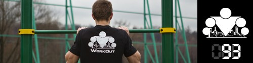

<==== Вернуться к оглавлению

Сегодня вас ждёт новый комплекс. После разминки выполняем всадника, так же как и вчера - 30-60 секунд, после чего переходим к сегодняшнему комплексу. Сегодня вы будете выполнять 3 упражнения друг за другом без перерывов, всего нужно сделать 5 кругов.
Если в какой-то момент вы почувствуете, что выбиваетесь из сил (по дыхалке или по мышцам), дайте себе время восстановиться и продолжайте.
Следующие 3 упражнения выполняются по круговому методу.
1. Отжимания в упоре лежа с поочередным подниманием рук - это упражнение очень похоже на обычные отжимания, с той лишь разницей, что в каждом отжимании в верхней точке (!) вы будете поднимать перед собой руку (вперёд-вверх, поочередно левую и правую, примерно до уровня глаз, чтобы рука была в той же плоскости, что и тело). Кстати, это одно из тех функциональных воркаутских упражнений, которые и прославили данное направление ;) Сделайте 10-20 повторений в зависимости от своей подготовленности.
2. Приседания с поочередным подниманием ног - в этом упражнении принцип заложен такой же, как и у предыдущего упражнения. Возвращаясь из каждого приседания в положение стоя вы будете поднимать перед собой ногу, сгибая её в колене и стараясь коленом коснуться груди (условно). Если вы представляете себе бег с высоко поднятыми коленями, то это упражнение выглядит очень похоже. Разве что без бега. Ноги поднимайте поочередно. Количество повторений 20-40 в зависимости от уровня подготовки.
3. Подтягивания с подъёмом коленей - добавляем к обычным подтягиванием подъём коленей к груди (если до груди тяжело, то хотя бы до параллели бёдер с землёй). Поднимайте колени к груди после каждого подтягивания, находясь в нижней точке (руки распрямлены). Напоминаю, что упражнение должно выполняться плавно, без каких-либо рывков или дёрганий, это относится как к подтягиваниям, так и к подъёму коленей. Выполните 3-7 повторений.
Ну а завтра вас ждёт новый комплекс!
======> День 94. ТУРБО комплекс ГАММА